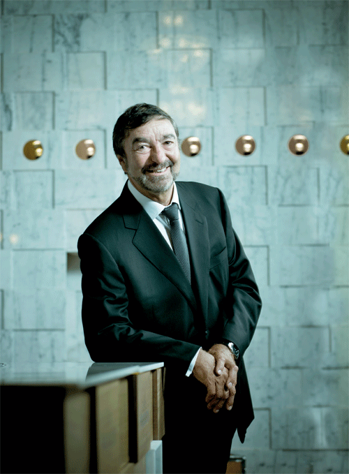
Eric Favre, inginer Nestlé, brevetează ideea capsulei de cafea după ce observă că barista din Roma agită espressorul pentru a crea spumă mai bogată.
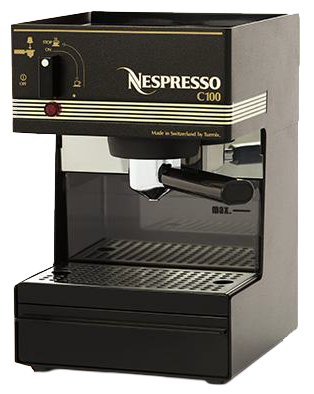
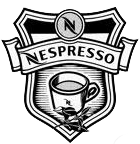
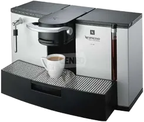
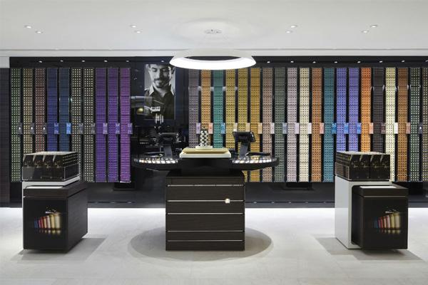
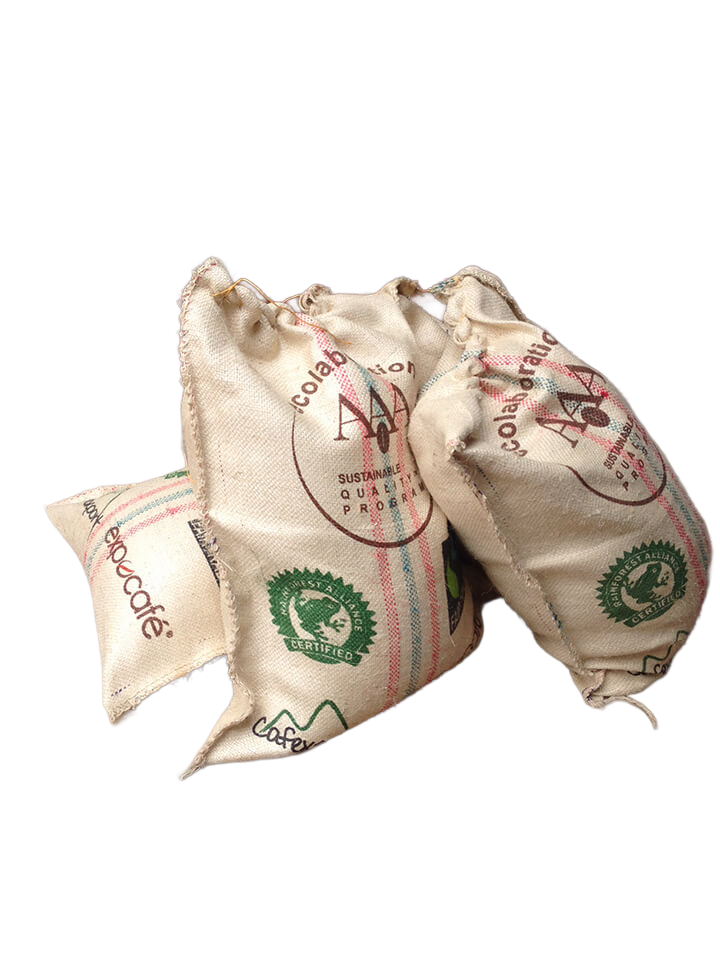
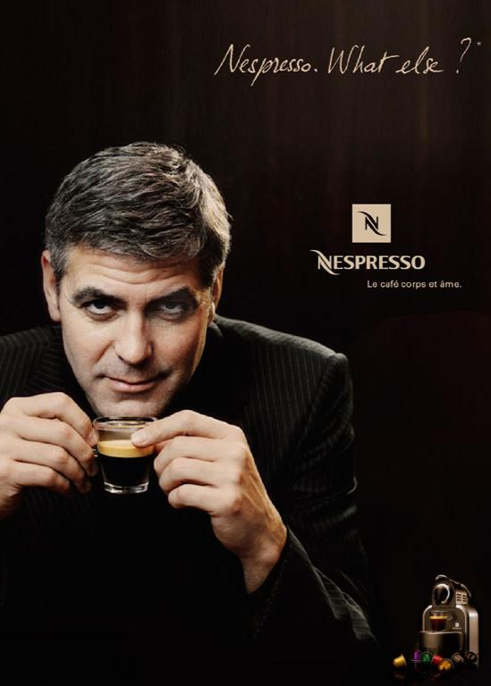
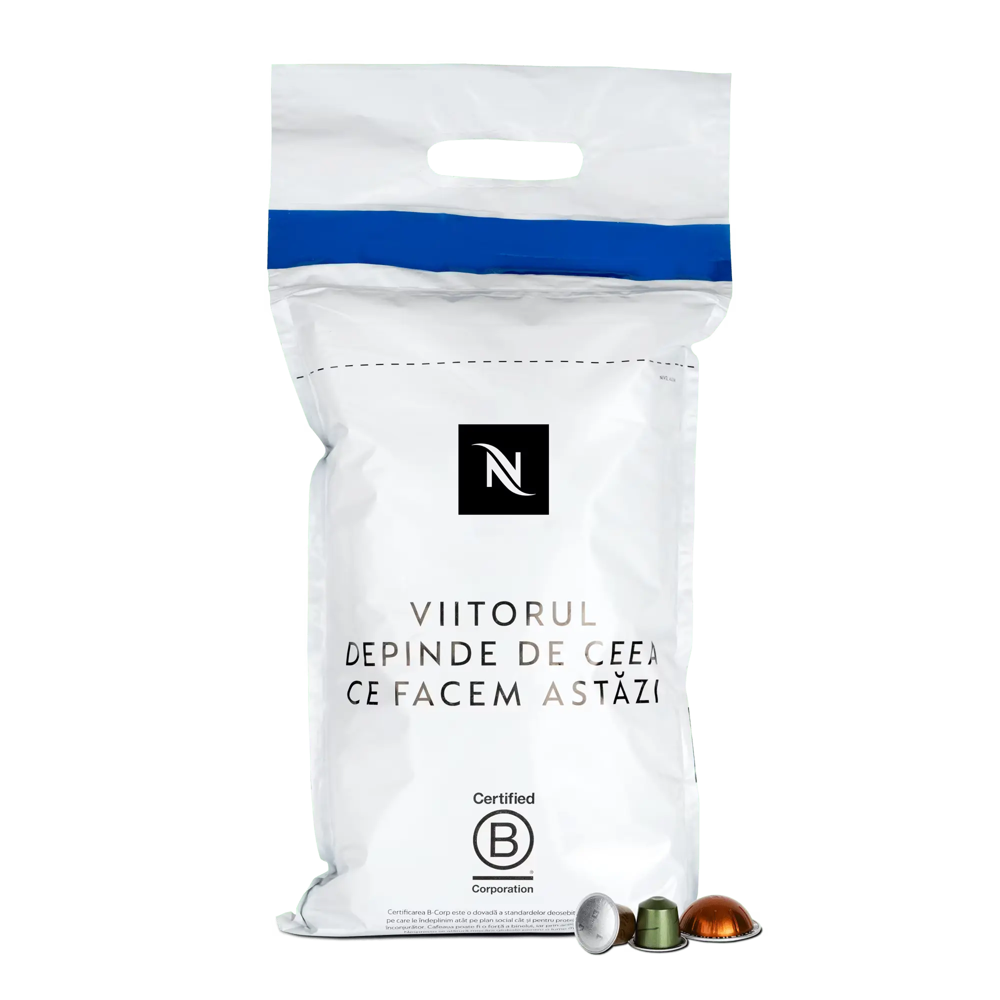
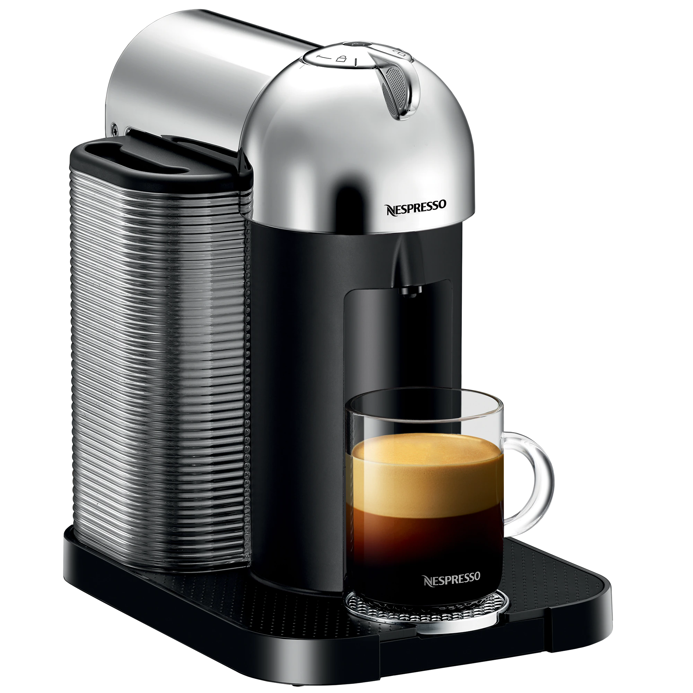
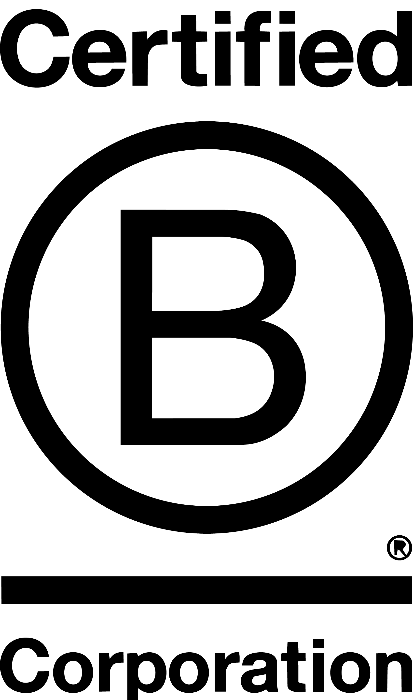
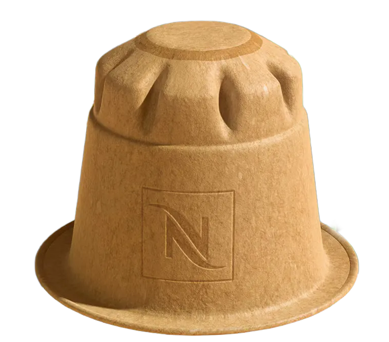
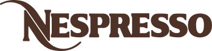
Sistem premium de capsule, experiența barista perfectă, la tine acasă. Lider global în segmentul cafelei portionate de lux.
Cafea instant și solubilă, cel mai mare brand de cafea din lume. Accesibil, omniprezent, volum mare.
Sistem de capsule entry-level, „cafeneaua la tine acasă" la preț accesibil. Varietate mare de băuturi.
Brand premium de retail și capsule, parteneriat de licențiere cu Nestlé din 2018. Capsule compatibile Nespresso și Dolce Gusto.
Clasicul espresso european, ritualul premium la tine acasă. Capsule din aluminiu, 28+ varietăți de arome.
Sistem centrifugal brevetat pentru băuturi lungi, varietate și comoditate. 25+ varietăți, de la espresso la cafea mare.
Soluții complete pentru HoReCa, birouri și spații premium de servicii. Ospitalitate corporate și evenimente.
Iubitori de espresso clasic. Ritual premium acasă, gustul autentic italian. Cafeaua e un moment personal de răsfăț zilnic.
Consumatori care caută varietate, comoditate și băuturi diverse, de la espresso la cafea lungă. Apreciază inovația.
Birouri, HoReCa și spații premium de servicii. Ospitalitate corporate și evenimente. Soluții complete B2B.
Nucleul tradițional al brandului. Franța, Elveția, Germania, piețele fondatoare. Cea mai mare densitate de boutique-uri.
Principalul motor de creștere. Expansiune accelerată prin Vertuo Line, adaptat preferințelor locale.
America Latină, Eurasia și Orientul Mijlociu, piețe cu potențial semnificativ de creștere.
“Cultivating coffee as an art to grow the best in each of us.”
Brand Purpose“We want to be the Louis Vuitton of coffee.”
Gerhard Berssenbrügge, CEOSpirit de pionierat
de la prima capsulă brevetată în 1976 la sistemul Vertuo din 2014
Cafeaua ca artă
calitate supremă, de la fermă la ceașcă, fără compromisuri
Cafeaua ca forță pozitivă
AAA Program, B Corp, 120.000+ fermieri susținuți
Onestitate și respect
principii de afaceri transparente, relații autentice cu comunitatea
Primul spot cu Clooney. Regizat de Michel Gondry. McCann Erickson Paris.
Regizat de Robert Rodriguez. Venituri triplate de la CHF 1.16 mld la CHF 3 mld.
“In the Name of Pleasure.” Campanie globală integrată. McCann Worldgroup.
“The Best Café. Yours.” Piața US/Canada. The Martin Agency.
“The Bet” la Cannes + Beckham ca ambasador global pentru segmentul tânăr.
Mister pe tren de lux. Cea mai mare investiție OOH din istorie. McCann.
Nespresso Club (fondat 1989). Unul dintre primele programe CRM din consumer goods. Retenție peste 85%. Comenzi online, telefon și app.
802 boutique-uri în 515 orașe, 76 țări. Experiențe imersive de brand. Sampling, recomandări personalizate, workshop-uri de cafea.
Canal core încă din anii '90. E-commerce Nestlé: 20.5% din vânzările totale (2025). App mobil pentru creșterea coșului mediu și a frecvenței.
Nespresso NU vinde în supermarketuri. Diferențiator strategic cheie. Distribuția exclusivă protejează marjele și controlul brandului.
Nespresso s-a lansat ca soluție pentru birouri (1986). Eșec comercial. Jean-Paul Gaillard a pivotat complet spre consumatori, a creat Nespresso Club (1989), distribuție prin poștă și parteneriate cu producători de mașini.
Boutique-uri ca temple de brand (Paris 2000), identitate vizuală rafinată, Clooney din 2006, terminologie de vin (“Grand Crus”). Venituri de la CHF 150M la CHF 3.5 mld.
Brevetele principale au expirat (2011–2012). Val de capsule compatibile la prețuri mai mici. Răspuns: Vertuo Line (2014) cu barcode proprietar = re-lock-in. 1.700 de brevete protejau sistemul.
Certificare B Corp (2022), capsule din hârtie (2023), 80% aluminiu reciclat. De la critic principal (deșeuri capsule) la diferențiator strategic. CHF 500M investiți în Positive Cup.